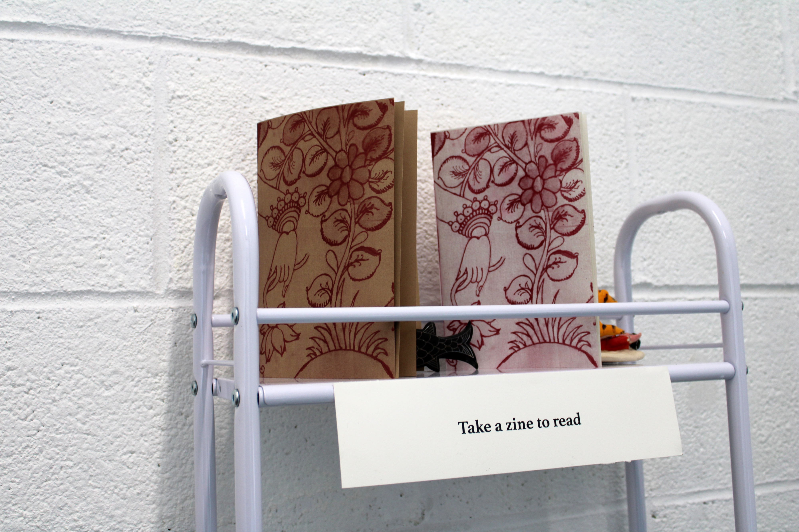
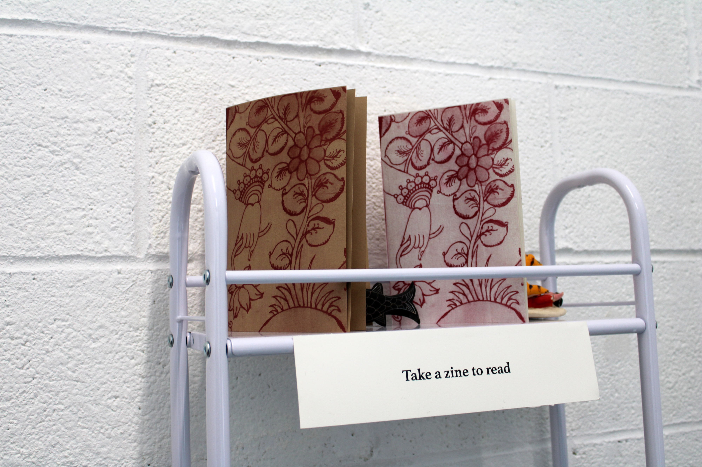

RITUALS OF RECURSION
(Decode kolams: https://kolam.codes/ritual/)
I developed a computer program that allows me to translate text into Kolam designs. Kolam (in Tamil) or Muggu (Telugu) is a traditional art form from South India. Kolams are auspicious drawings on the floor (usually at the threshold of the home) using rice flour. Kolams are traditionally made by women and created before sunrise. They comprise mathematically complex patterns that feature continuous intertwined lines.
To encode text into Kolam designs, I first translate each character into eight-digit binary codes (made from only 0s and 1s). I then use an algorithm to map this translation onto a diamond-shaped matrix of dots. The algorithm moves top to bottom and left to right, drawing loops on each dot that correspond with either 0 or 1 according to the binary code translation of the text. The algorithm connects these loops, making sure to never connect loops associated with “0” to those associated with “1”. The center of the matrix contains blank padding space, allowing the entire pattern to be distributed evenly on the matrix, preserving the perfect square/diamond shape.
 I started working with kolams because I wanted to translate my grandmother’s name, Swarajyalaxmi, into a kolam as part of a reclamation of a mourning ritual after her passing in 2022. My family mourned my grandmother by invoking three generations following a patriarchal line (my grandmother, her mother-in-law, and her mother-in-law’s mother-in-law). In contrast, I worked matrilineally, creating three kolams representing Swarajyalaxmi, Kameswaramma (her mother), and Rajyalaxmi (her grandmother). I draw the kolams signifying their names while simultaneously playing audio from an interview with her a month before she passed away at age 101. The audio shows how my grandmother’s name signifies independence in the colonial context, and the interview also highlights her resilience in the face of patriarchal oppressions such as being married at age twelve.
I started working with kolams because I wanted to translate my grandmother’s name, Swarajyalaxmi, into a kolam as part of a reclamation of a mourning ritual after her passing in 2022. My family mourned my grandmother by invoking three generations following a patriarchal line (my grandmother, her mother-in-law, and her mother-in-law’s mother-in-law). In contrast, I worked matrilineally, creating three kolams representing Swarajyalaxmi, Kameswaramma (her mother), and Rajyalaxmi (her grandmother). I draw the kolams signifying their names while simultaneously playing audio from an interview with her a month before she passed away at age 101. The audio shows how my grandmother’s name signifies independence in the colonial context, and the interview also highlights her resilience in the face of patriarchal oppressions such as being married at age twelve.
In this exhibition, I expand on this work by incorporating new letterpress printed works created using a set of 3D-printed kolam monotype blocks. There are kolams for my grandmother, her mother, and her grandmother but I also include letterpress prints that extend the process beyond familial connections. There are kolams commissioned by friends honoring their loved ones, kolams honoring martyrs, specific places, and some that feature messages of resilience and resistance. In these works, I see the act of translation as a ritual of reverence. Each kolam becomes an invocation and an offering. I invited all to spend time with each kolam and decode its meaning using kolam.codes. On this website, visitors could also encrypt new kolams.
Together, these works explore the recursive nature of identity: names containing histories and personal stories intertwining with collective memory.
In addition to the artwork, the exhibition also features a "reading nook" with a zine of Telugu poetry curated by The Telugu Archive (Sai Priya Kodidala). The poems touch on themes of patriarchy, resistance, and the ways women have shared histories through mediums outside of traditional academia (i.e. song, clothing, kolam/muggulu). Sai Priya Kodidala is an independent writer and researcher from Hyderabad, India focusing on the intersection of Telugu literature, politics, history and art. The Telugu Archive traces the rich socio-political history of resistance, civil rights and revolutionary politics.
You can view the zine online here.
gallery view Letterpress prints Letterpress prints
 Letterpress prints
decoding a kolam on the website
Drawing the kolam
Letterpress prints
decoding a kolam on the website
Drawing the kolam
 close-up
close-up
 finished kolam
reading nook

zines
grateful to all that came to the exhibition!
finished kolam
reading nook

zines
grateful to all that came to the exhibition!
← back to selected work